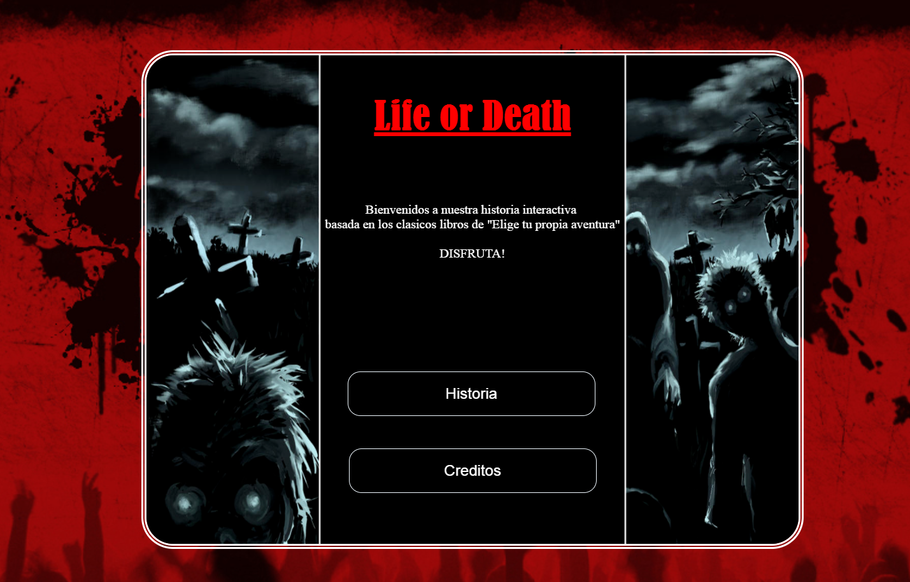

Elige tu propia Aventura

Este trabajo consistia en realizar una aventura pensada para tabletas basandome en los libros clásicos de 'Elige tu propia aventura' En esta pequeña historia hecha con JavaScript podemos seleccionar que rumbo queremos que siga el protagonista, para acceder a la pagina donde esta colgada la historia solo hay que ir a este enlace:
https://quimvila.neocities.org/Historia/Portada.html